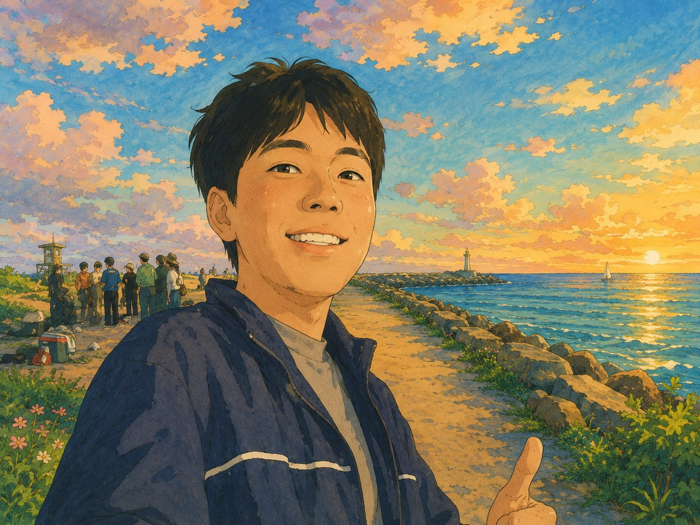
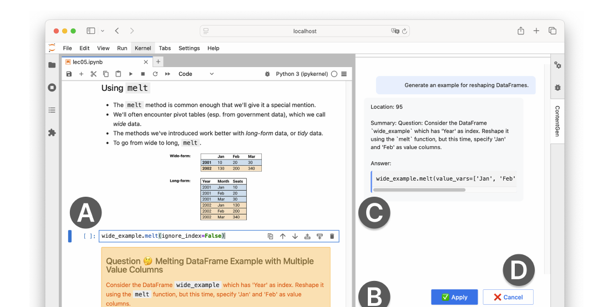
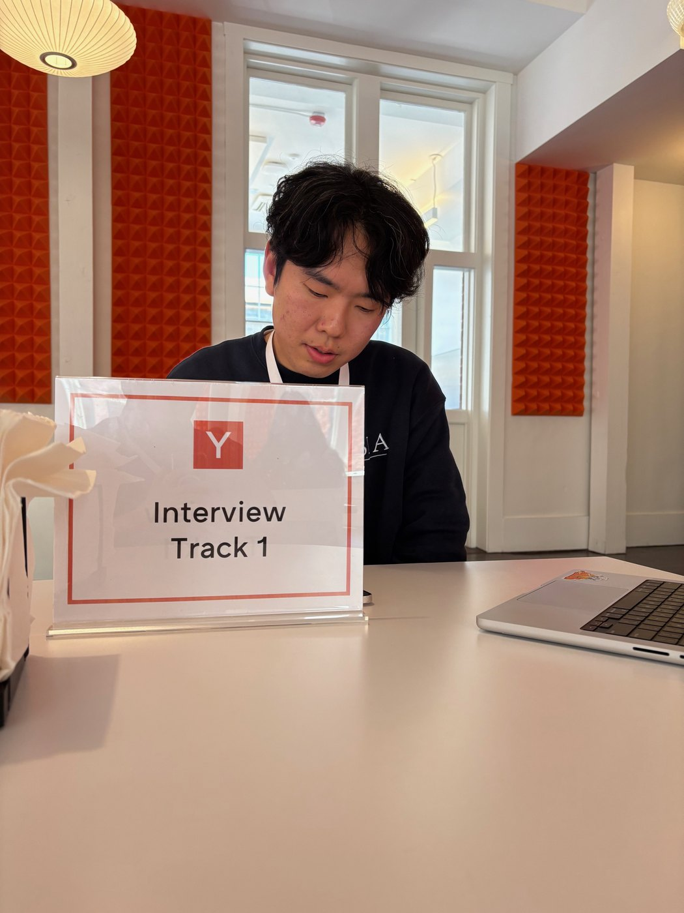
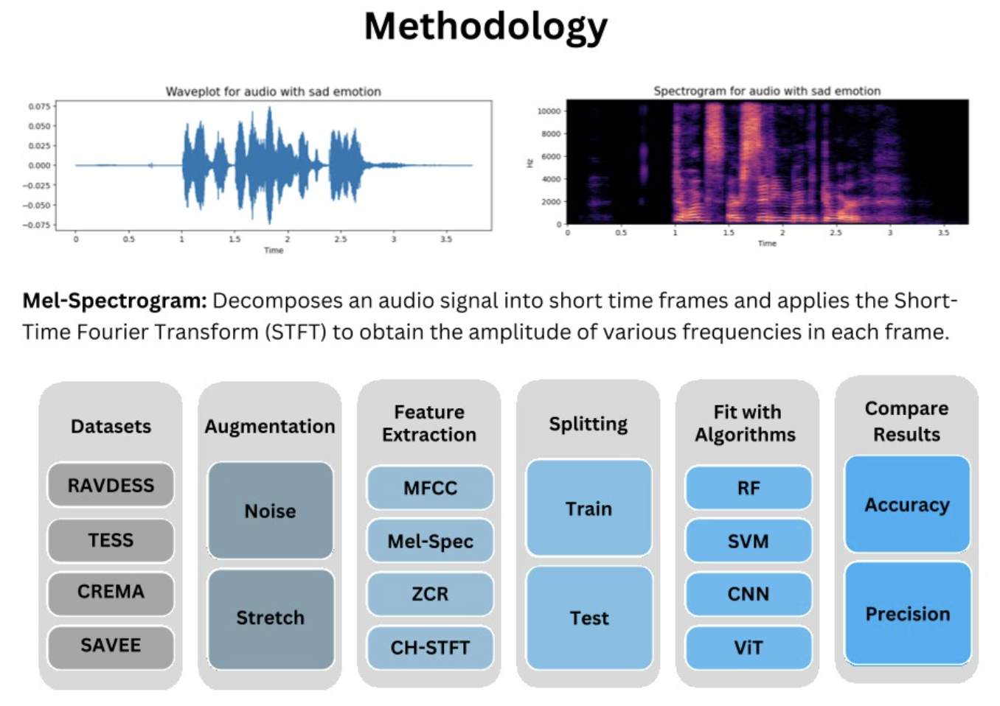
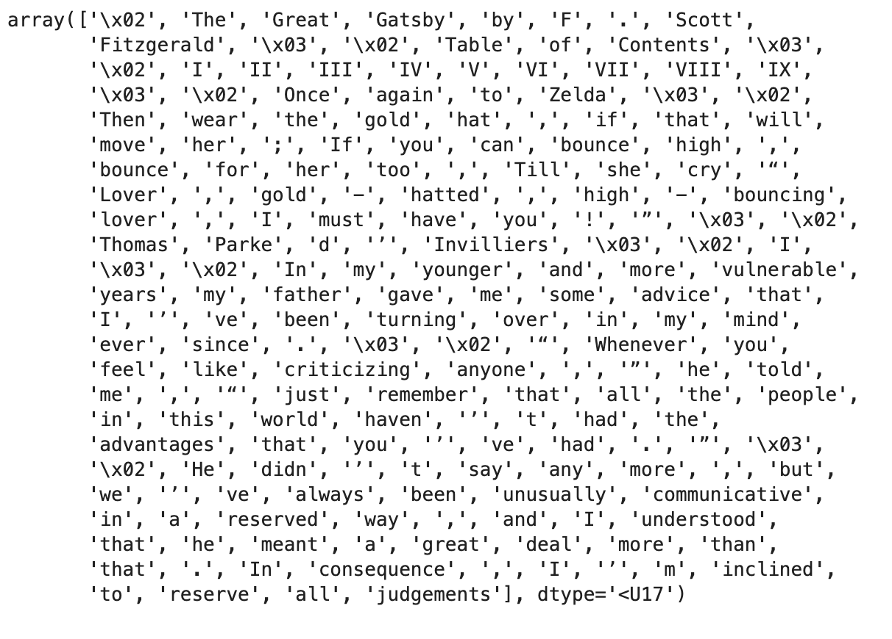

Gabriel Cha
i like to think, explain, build.
agentic harnesses that reason, search the web, and synthesize information fascinate me. so does fine-tuning llms on a100s to push quality on narrow tasks.
Portfolio · New York
ML engineer and data scientist. I build agentic systems, fine-tune language models, and draw things like this in code. The small islands are my projects.
Scrollfig. 01 a valley in the sky — 4,516 polygons, redrawn every frame. drag to turn it.

I'm Gabriel, software engineer @ pax ai (YC S24), interested in where tech is heading, crafting and steering harnesses to surface signals from incredibly complex, noisy data and create impactful stories.
Curious about how System 1 models can reshape the way code is written, moving beyond strictly deterministic logic by integrating harnesses directly into the code itself, where software is no longer static, but constantly evolving to the needs of the business, clients, and the physical world.
Building harnesses that can reason in trade compliance language, a system of deterministic code and agentic reasoning to audit fortune 100 companies to help clients navigate complicated, volatile tariff laws and importantly streamline compliance with visibility.
Backed by Initialized Capital
Software engineer at Pax (YC S24). Previously an AI/ML engineer at Honeywell and Root Access (backed by AlleyCorp), and a data scientist at Edison.

Accepted to ACM SIGCSE 2026
We needed practice problems for the intro data science courses we taught at UCSD, so we built a JupyterLab tool that drafts questions from the instructor's own notebook, then tested which prompts actually made them better. Six instructors tried it and found it useful.

Y Combinator interview, Summer 2025
Most AI debuggers send your stack traces and source code to someone else's server, which is a dealbreaker when your code or data is private. I wanted one that never leaves your laptop. Cloi reads the error, pulls in the parts of your codebase that matter, and suggests a small fix you can accept or reject — because most bugs just need the right context.

Funded by the UCSD HDSI Undergraduate Research Scholarship
Can a model hear how someone feels? Two teammates and I trained models on 12,000 voice clips, and our best one got 86% right. What stayed with me was how sure it was when it was wrong — calling anger sadness with high confidence. That's what pulled me toward making models easier to understand.

Used by 2,000+ students across 12 terms of DSC 80
As a TA, I designed this project from zero to one: I picked real loan application data, shaped it into a story about how lenders decide who gets which interest rate, and wrote the questions that walk students through it. They clean messy job titles and dates, bin credit scores, and run a permutation test on personal statements. More than 2,000 students have learned the fundamentals of data science from it.

I wanted to understand language models from the ground up, so I built the simplest one: guess the next word by counting what usually comes next. It sounds fluent two words at a time but wanders off over a full sentence, which made me appreciate how much today's models quietly keep track of.